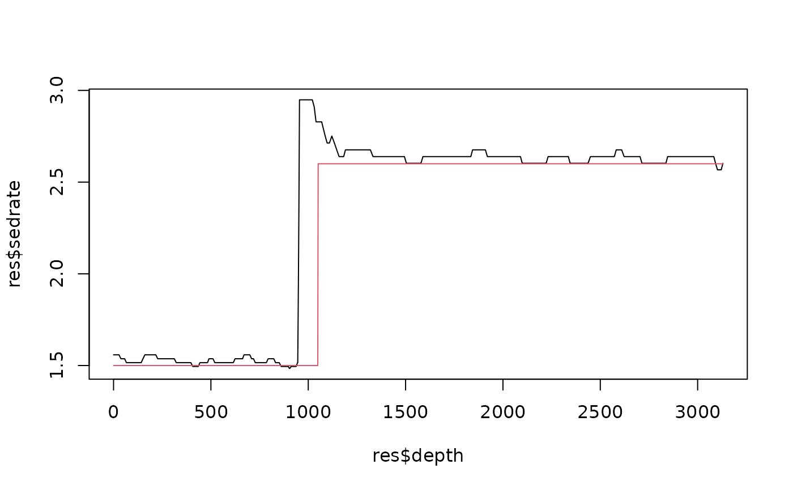

Iterative (demodulated) astronomical tracking of the sedimentation rate
Source:R/track_astro_iterative.R
track_astro_iterative.RdTracks the sedimentation rate, converts the record to approximate time with the result, transforms it again in that (nearly stationary) time domain with sharper wavelets, tracks the residual stretch of the time axis, composes the age models and repeats. Demodulating a signal by its own estimated instantaneous frequency before the synchrosqueezing makes the ridges much sharper than any higher-order synchrosqueezing of the raw signal (Meignen et al. 2017; Jiang et al. 2022), and in cyclostratigraphy the demodulation is the age model itself: in the time domain the astronomical cycles have (nearly) fixed periods, so wavelets with many more cycles can be used, the eccentricity quartet and the precession bands separate, and the tracked residual converges to the true age model.
Usage
track_astro_iterative(
data,
sedrate,
n_iter = 1,
residual = 1.6,
scalogram = c("chirplet_sst", "superlet_sst", "msst", "cwt"),
omega_nr = 6,
omega_nr_warped = c(12, 18, 24),
age_ma = 0,
k_yr = NULL,
astro_periods = NULL,
guide = NULL,
guide_tolerance = 0.4,
duration = NULL,
duration_tolerance = 0.5,
constraints = NULL,
jump_depths = NULL,
dj = 1/50,
n_samples = 100,
verbose = TRUE,
...
)Arguments
- data
Record to analyse (required, no default): matrix or data frame with depth in column 1 and the proxy value in column 2; further columns are ignored, rows with missing values are removed and the rows are sorted by depth.
- sedrate
Range of the sedimentation rate in which the first (depth) track is searched (required, no default): numeric vector
c(lower, upper), > 0, in depth units per kyr (e.g. m/kyr for a record in metres).- n_iter
Maximum number of warped (time-domain) iterations (integer, >= 0; 0 returns the depth track only). In synthetic tests (three jumps of the sedimentation rate, AR1 noise) the first warped iteration lowered the largest age error by about 10-15 percent and a second one gave nothing more (it sometimes regressed), so one iteration is the default.
Default=1.- residual
Largest residual stretch of the time axis searched in the warped iterations (numeric, > 1): the residual rate is searched in
c(1/residual, residual)in the first warped iteration and inc(1/sqrt(residual), sqrt(residual))in later ones.Default=1.6.- scalogram
Scalogram of the first (depth) iteration (character):
"chirplet_sst"(in the synthetic tests its tracks had about 35 percent lower age errors than those of"superlet_sst", at four times the cost),"superlet_sst","msst"or"cwt"(best for records that resolve only the eccentricity, e.g. Klonk); seetrack_astro_auto.Default=c("chirplet_sst", "superlet_sst", "msst", "cwt"), i.e."chirplet_sst".- omega_nr
Number of oscillations of the Morlet wavelet for
scalogram = "cwt"(numeric, > 0).Default=6.- omega_nr_warped
Morlet omega_0 values of the superlet-SST orders (
omega_nrofanalyse_superlet_sst) used in the warped (time) iterations (numeric vector, > 0); higher values give sharper period resolution, which the nearly stationary time domain allows.Default=c(12, 18, 24).- age_ma
Age of the record in Ma (numeric, >= 0), used to compute the astronomical periods with
astro_periods_tracking; ignored whenastro_periodsis given.Default=0.- k_yr
Precession constant (numeric, the period of the axial precession in years) passed to
astro_periods_trackinginstead of the AstroGeo22 value forage_ma;NULLuses AstroGeo22.Default=NULL.- astro_periods
Astronomical periods in kyr replacing the ones from
age_ma: a numeric vector of periods or a data frame in the format ofastro_periods_tracking;NULLcomputes them.Default=NULL.- guide
Rough sedimentation rate curve for the first track (two-column data frame or matrix: depth, rate in depth units per kyr, or
NULL); seetrack_astro_auto.Default=NULL.- guide_tolerance
Relative half width of the band around
guide(numeric, > 0).Default=0.4.- duration
Approximate duration of the record in kyr (numeric, or
NULL); turned into a guide whenguide = NULL, seetrack_astro_auto. Strongly recommended for real records.Default=NULL.- duration_tolerance
Relative tolerance of the guide built from
duration(numeric, > 0).Default=0.5.- constraints
Duration constraints (data frame with the columns
from,to(depths),duration(kyr) and optionallytolerance, orNULL); seetrack_astro_autoandtrack_astro_hmm. Given in depth and converted to model time for the warped iterations.Default=NULL.- jump_depths
Depths where an abrupt change of the sedimentation rate is plausible (numeric vector in depth units, or
NULL); seetrack_astro_hmm. Converted to model time for the warped iterations.Default=NULL.- dj
Spacing of the period axis of the scalograms, in octaves (numeric, > 0; smaller values give a finer grid and a slower run).
Default=1/50.- n_samples
Number of paths drawn from the posterior for the credible bands (integer, > 0).
Default=100.- verbose
Print the confidence and duration of every iteration (logical, TRUE or FALSE).
Default=TRUE.- ...
Further arguments passed to
track_astro_auto(first iteration) and totrack_astro_hmm(warped iterations), e.g.sd_change,seed.
Value
A wr_track data frame in depth as from track_astro_hmm (columns depth, sedrate,
confidence, confidence10, time, time_lower, time_upper, ...), with attributes iterations (the per-iteration
summaries: mean confidence10, duration), tracks (the track of every iteration in depth), warped
(the last warped scalogram with its period axis in kyr, i.e. the tuned scalogram, and the record in time) and
first (the result of the depth iteration, a track_astro_auto object).
Details
Every iteration is checked with the posterior of the tracking (confidence10, the probability within 10
percent of the track): when the confidence falls, the previous iteration is kept and the loop stops. The
demodulation sharpens the ridges but cannot repair a first track that follows the wrong cycles over a long
interval (the warped record then shows the same ambiguity at a different stretch), so the prior information of
track_astro_auto (duration, constraints, jump_depths) matters more than
the iterations. The credible band of an iteration is the band of the residual widened in quadrature by the band of
the previous iteration.
References
Meignen, S., Pham, D.-H. and McLaughlin, S. (2017). On demodulation, ridge detection, and synchrosqueezing for multicomponent signals. IEEE Trans. Signal Process. 65, 2093-2103.
Jiang, Q., Prater-Bennette, A., Suter, B.W. and Zeyani, A. (2022). Instantaneous frequency-embedded synchrosqueezing transform for signal separation. Front. Appl. Math. Stat. 8, 830530.
Examples
# \donttest{
set.seed(1)
t <- seq(0, 1500, by = 0.5)
ecc <- 0.4 * cos(2 * pi * t / 405) + 0.25 * cos(2 * pi * t / 125)
x_t <- (1 + ecc) * (sin(2 * pi * t / 23.7) + 0.6 * sin(2 * pi * t / 19)) +
0.7 * sin(2 * pi * t / 41)
sr <- ifelse(t < 700, 1.5, 2.6)
zt <- c(0, cumsum(sr[-1] * diff(t)))
z <- seq(0, max(zt), by = 1)
x <- approx(zt, x_t, z)$y + rnorm(length(z), sd = 1.5)
res <- track_astro_iterative(data.frame(z, x), sedrate = c(0.8, 5))
#> track_astro_hmm: cycles used for changes of the rate only (not resolved over the whole sedimentation-rate range): 405.7
#> track_astro_hmm: cycles used for changes of the rate only (not resolved over the whole sedimentation-rate range): 405.7
#> iteration 0 (depth): confidence10 0.958 duration 1451
#> iteration 1 (warped, residual 0.62 - 1.6 ): confidence10 0.958 duration 1445
plot(res$depth, res$sedrate, type = "l")
lines(z, approx(zt, sr, z)$y, col = 2)

# }